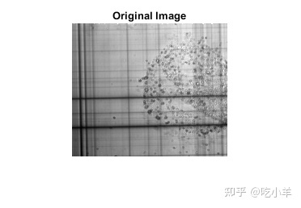
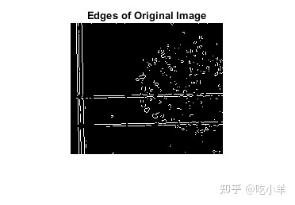
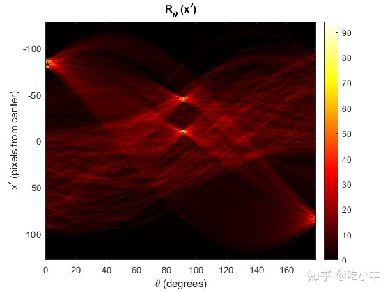
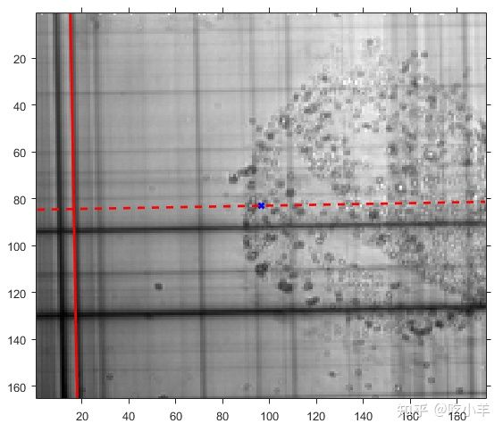
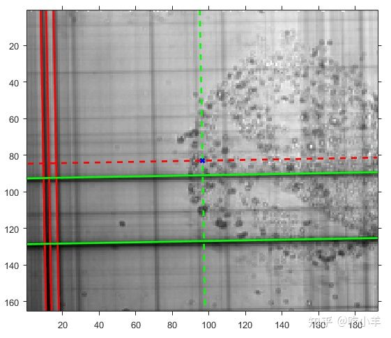

Home
本示例说明如何使用 Radon 变换来检测图像中的线条。Radon 变换与称为 Hough 变换的常见计算机视觉操作密切相关。您可以使用radon函数来实现一种用于检测直线的Hough变换形式。
计算图像的 Radon 变换
将图像读入工作区。将其转换为灰度图像。
I = fitsread('solarspectra.fts');
I = rescale(I);
显示原始图像。
figure
imshow(I)
title('Original Image')

使用edge函数计算二值边缘图像。显示edge函数返回的二进制图像
BW = edge(I);
figure
imshow(BW)
title('Edges of Original Image')

使用radon函数计算图像的radon变换，并显示变换。变换中峰值的位置对应于原始图像中直线的位置。
theta = 0:179; [R,xp] = radon(BW,theta);
显示radon变换的结果。
figure
imagesc(theta, xp, R); colormap(hot);
xlabel('\theta (degrees)');
ylabel('x^{\prime} (pixels from center)');
title('R_{\theta} (x^{\prime})');
colorbar

R中最强的峰值对应于 θ=1度 ，x' = -80 像素，距中心。
解释Radon 变换的峰值
要在原始图中可视化此峰值，请找到图像的中心，由覆盖在下图中的蓝色十字表示。红色虚线是以θ=1度穿过中心的径向线。如果您沿着这条线从中心（向左）-80 像素移动，则径向线与红色实线垂直相交。这条红色实线是Radon变换中信号最强的直线。

要进一步解释 Radon 变换，请在R中检查接下来的四个最强峰。
在θ=1度，距离中心 -84 和 -87 像素的偏移量处，发现了两个强烈的峰值。这些峰值对应于最强线左侧的两条红线，叠加在下图上。
在R的中心附近发现了另外两个强峰。这些峰值位于θ=91度，与中心的偏移量为 -8 和 -44 像素。下图中的绿色虚线是以 91 度角穿过中心的径向线。如果您沿径向线移动距离中心 -8 像素和 -44 像素的距离，则径向线与绿色实线垂直相交。这些绿色实线对应于R中的强峰。
图像中较暗的线条与R中较弱的峰有关。

======================================================================
我的测试结果及程序
下面是我测试的代码：

注：本文根据MATLAB官网内容修改而成。